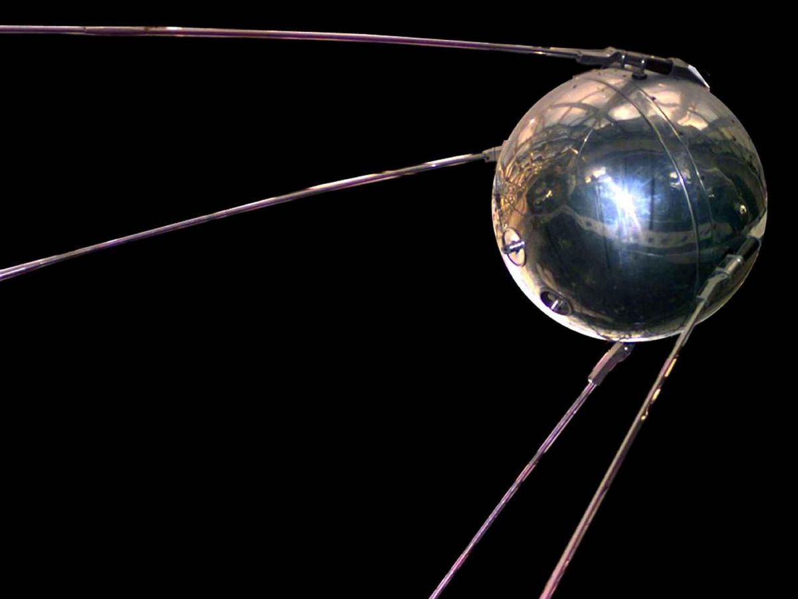

L'Homme, depuis les temps anciens, regardait le ciel et se demandait ce que pouvait être cette boule qui leur donne de la lumière, ainsi que l'autre qui vient obscurcir l'espace. Cela a toujours fasciné l'Homme, et celui-ci s'est mis en tête d'explorer cet environnement.
